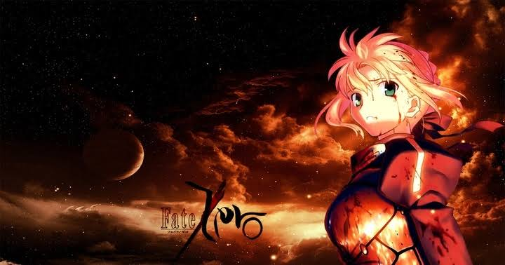
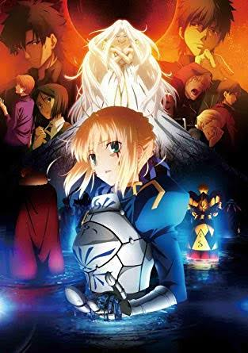
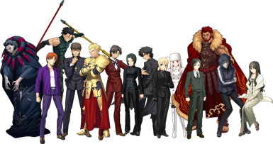

Fate Zero
Fate Zeroは、TYPE-MOONから発売されたライトノベル。著者はニトロプラスの虚淵玄。キャラクターデザイン・イラストはTYPE-MOONの武内崇。TYPE-MOONとニトロプラスの初コラボレーション作品である。TYPE-MOONの奈須きのこがシナリオを執筆したFate/stay nightを本編とするスピンオフ作品で、本編では10年前の出来事として断片的に語られていた「第四次聖杯戦争」の詳細を、本編の登場人物たちの1世代前の人々を中心に描く前日譚となる。
あらすじ 1990年代のある年の秋。主人公・衛宮切嗣は、名家アインツベルンの委嘱を受け、セイバーのサーヴァントを召喚し、妻のアイリスフィール・フォン・アインツベルン、従者の久宇舞弥とともに四度目の聖杯戦争に身を投じる。切嗣は聖杯の万能の力によって世界平和を実現するため、非情に徹する覚悟で臨む。
  
製作者：原昌大
トップへ戻る
page1へ
page2へ